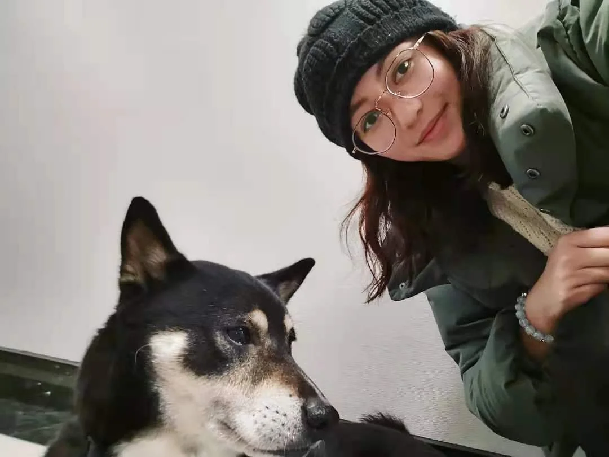

Curious about people.
Passionate about digital craft.
Designing the space in between.
I'm Aviss Kejia Zhao, a product designer and associate registered graphic designer (RGD) based in Toronto, Canada. I hold a Bachelor of Design from Thompson Rivers University (2023) and an Advanced Diploma in Interaction Design & Development from George Brown Polytechnic (2020).
I'm a product designer who believes great design lives at the intersection of visual craft and human understanding. I approach every project by grounding decisions in user needs, then pushing the visual and interaction quality until the experience feels both intuitive and considered. With a multidisciplinary education and years of experience across fintech, e-commerce, and digital products, I bring a wide lens to every design challenge — from systems thinking to pixel-level precision.
My experience spans full-time roles and contract projects across product design, visual design, and design systems. I see design as both a discipline and a joy — something that rewards curiosity, patience, and a genuine care for the people using what you build.
Outside of work, I'm drawn to cultural experiences — traveling, watching films, and discovering the hidden corners of cities. In 2024, I took time away to reconnect with family and explore Shaxi Ancient Town in Dali, Yunnan. Now I'm back — fully recharged, with a fresh perspective, and a redefined approach to design through the integration of AI.
Education
- Bachelor of Design Thompson Rivers University, Class of 2023 2023 PLAR Award
- Google UX Design Certificate 2021 – 2022
- Advanced Diploma — Interaction Design & Development George Brown Polytechnic, Class of 2020 Dean's Honour List, All Semesters · The Registered Graphic Designers Award
Expertise
- UI/UXUX Research & Usability Testing, Wireframes, User Flows, Journey Maps, High-Fidelity UI, Prototypes, Responsive Design
- Visual Design & Art DirectionVisual Communication, Branding, Marketing Assets, Image Optimization
- Design SystemsComponent Libraries, Guidelines, Scalable UI Systems, Brand Consistency across Platforms
- CollaborationCross-Functional Teamwork (Product, Tech, Marketing)
- ToolsFigma, Adobe CC, HTML & CSS
- AI-Integrated WorkflowVibe coding, AI-assisted design & prototyping, prompt engineering for design tasks (Claude)
- AccessibilityInclusive Design & WCAG
- LanguagesEnglish (Advanced), Chinese (Native — asset for bilingual design)